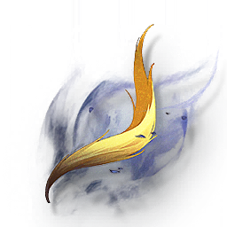

Gold-Dissolving Feather
Development Materials

Impermanence Heron's drop, used for Resonator's breakthrough.
The golden feathers of Impermanence Heron, from which a dirty and rotten smell constantly flows. A researcher once tried to seal the feathers in various metal containers, but the containers would corrode in a moment.